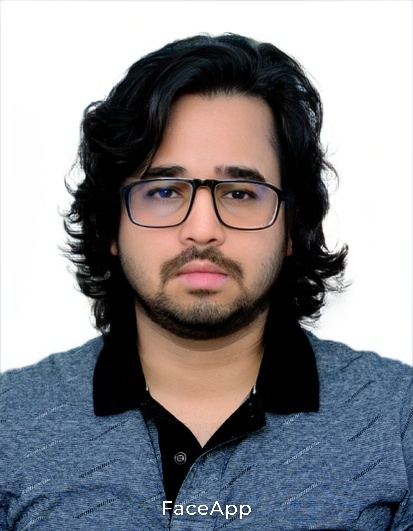

Mohd Mujtaba Akhtar
Hello! I am Mohd Mujtaba Akhtar. My core research interests revolve around speech and audio processing, with a particular focus on audio deepfake detection, emotional speech understanding, and the application of multimodal and foundation models in both behavioral and forensic domains.
I am currently working on audio deepfake detection using transfer learning from foundation models as part of my thesis work.
I am actively seeking research collaboration opportunities in areas such as speech/audio deepfake detection, audio-visual deepfake detection, speech emotion recognition, affective computing, and speech-driven healthcare applications. I am always open to new ideas and interdisciplinary projects—if you are interested in collaborating or have suitable opportunities (including research positions or internships), please feel free to reach out at : mmakhtar.research@gmail.com.
I am passionate about pushing the boundaries of what is possible with speech and audio technology. I look forward to connecting and working together!
Research Interests
- Computational Speech Analysis
- Deepfake Forensics
- Emotional Speech Understanding
- Healthcare Applications (Speech)
- Multimodal/Foundation Models
